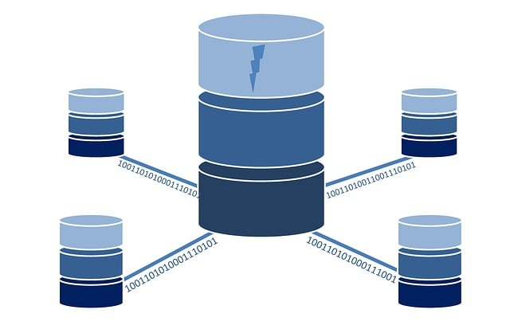
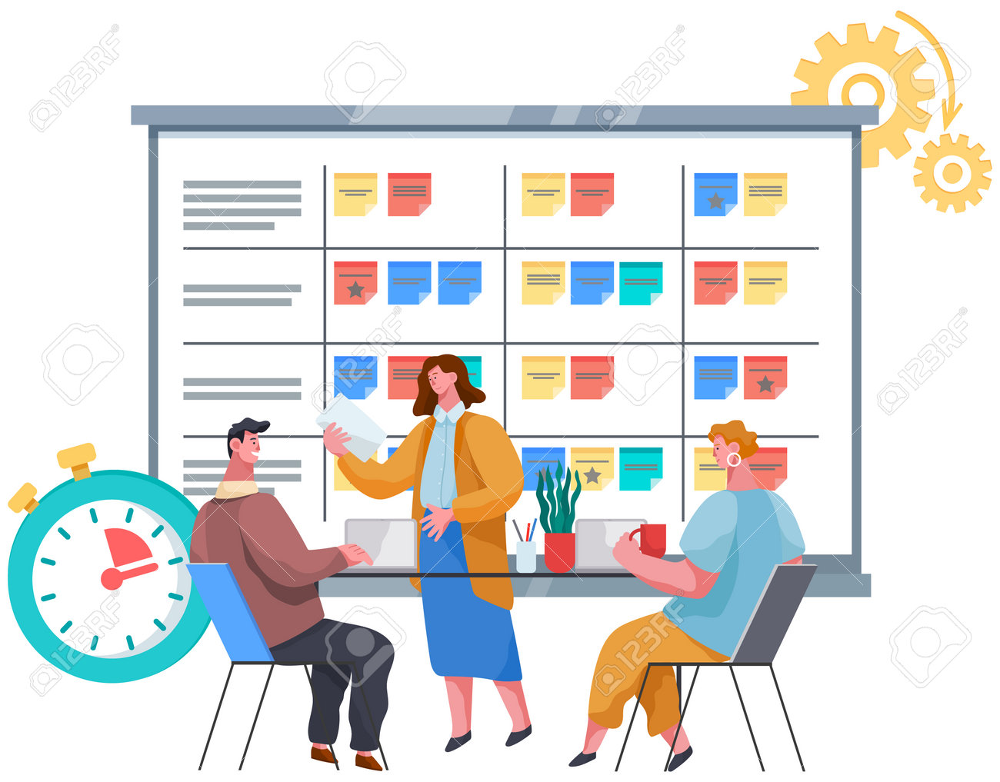

Soft Skills
 Langages de programmation : HTML, CSS, JavaScript, Python
Langages de programmation : HTML, CSS, JavaScript, Python-  Gestion de bases de données : MySQL, SQLite
 Outils de développement : Git, Visual Studio Code
Outils de développement : Git, Visual Studio Code-  Compétences en gestion de projet et travail en équipe
Je m'appelle Samir ZIANI, issu d'une formation initiale en économie gestion, je suis actuellement en reconversion profesionnelle dans l'informatique, étudiant en BTS SIO (Services Informatiques aux Organisations) à l'école IFIDE Sup-Formation à Strasbourg. Passionné par le développement web et la gestion de projets informatiques, je suis constamment à la recherche de nouvelles opportunités pour apprendre et évoluer dans le domaine de l'informatique.
Langages de programmation : HTML, CSS, JavaScript, Python Outils de développement : Git, Visual Studio CodeCréation de site internet en 2018 pour une PME
Projet de création de tapis de jeu de cartes (TCG) en 2022, principalement Magic the Gathering
Vous pouvez me contacter ou consulter mes profils :
Vous pouvez aussi m’envoyer un mail directement à samir.zn7@gmail.com.